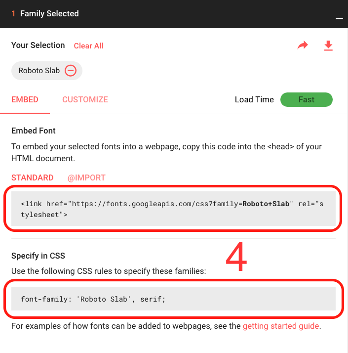

Шрифт
Чтобы выбрать шрифт:
- Перейдите на Google Fonts и прокрутите список вниз, пока не найдёте шрифт, который вам понравится. Вы также можете использовать элементы управления справа для дальнейшей фильтрации результатов.
- Щёлкните по кнопке "плюс" рядом со шрифтом, который вы хотите выбрать.
- Щёлкните по кнопке "* Family Selected" на панели в нижней части страницы. ("*" зависит от того, сколько шрифтов вы выбрали)
- В всплывающем окне вы можете увидеть и скопировать строки кода, которые предоставляет Google, чтобы сохранить их позже в вашем текстовом редакторе.
